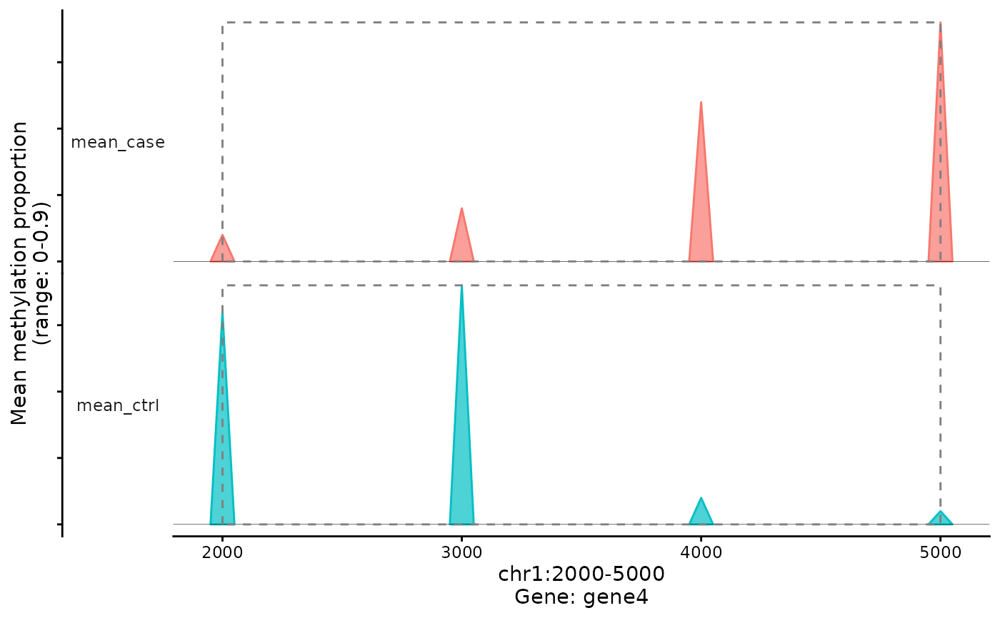

Visualise differentially methylated regions (DMRs) over a genomic
interval using per-group mean methylation profiles stored in
pre_calldmrs_res. For each group (e.g. case/ctrl) the function
draws small “triangles” at CpG positions, where the height encodes the
mean methylation proportion in \([0, 1]\).
plot_dmrs(
met,
pre_calldmrs_res,
region,
shift_up = 3L,
shift_down = 3L,
gene_col = NULL,
regul_col = NULL
)A methylTracer object. The underlying HDF5 file is
taken from met@seed@filepath, and marker coordinates are
parsed from met@marker_name (format
"chr_start_end").
A data.frame returned by
pre_calldmrs. It must contain at least columns
chr, pos (CpG position), and group-wise mean
methylation columns whose names start with "mean" (e.g.
"mean_case" / "mean_ctrl") in \([0, 1]\).
Character scalar specifying the genomic interval to
plot, in the form "chr:start-end", e.g.
"chr1:1000-5000". start and end should match
values in calldmrs_turbo.
Integer, how many CpG indices upstream of
start to include for context (default 3).
Integer, how many CpG indices downstream of
end to include for context (default 3).
Optional character scalar giving the name of a 1D
dataset under "var/" (e.g. "SYMBOL"). The value at
the end marker will be shown in the x-axis label as gene
annotation.
Optional character scalar giving the name of a 1D
dataset under "var/" (e.g. a regulatory category). The value
at the end marker will also be shown in the axis label.
A ggplot object showing the per-group methylation
profiles over the requested region.
The region boundaries (start, end) are
matched against pre_calldmrs_res$pos on the specified
chromosome. If either boundary cannot be found an error is raised.
The plotted y-axis corresponds to mean methylation proportions in \([0, 1]\) (consistent with storing methylation as 0–1 values in the package).
Upstream/downstream context is controlled by shift_up
and shift_down in terms of CpG indices rather than
base pairs.
Internally this function calls two helpers:
plot_dmr_mt() – builds the triangle polygons per CpG
and group;
plot_dmrs_g() – draws the ggplot2 figure.
# \donttest{
## minimal workflow example (0–1 methylation values)
output_dir <- tempdir()
## sample metadata
sam_info_df <- data.frame(
sample_name = paste0("sample_", 1:8, ".bed"),
group = c(rep("case", 4), rep("ctrl", 4)),
stringsAsFactors = FALSE
)
sam_info <- file.path(output_dir, "sample_info.csv")
## toy methylation matrix (0–1 scale)
input_file_df <- data.frame(
marker_name = c(
"chr1_1000_2000",
"chr1_2000_3000",
"chr1_3000_4000",
"chr1_4000_5000"
),
sample_1.bed = c(0.10, 0.20, 0.60, 0.90),
sample_2.bed = c(0.10, 0.20, 0.60, 0.90),
sample_3.bed = c(0.10, 0.20, 0.60, 0.90),
sample_4.bed = c(0.10, 0.20, 0.60, 0.90),
sample_5.bed = c(0.80, 0.90, 0.10, 0.05),
sample_6.bed = c(0.80, 0.90, 0.10, 0.05),
sample_7.bed = c(0.80, 0.90, 0.10, 0.05),
sample_8.bed = c(0.80, 0.90, 0.10, 0.05),
check.names = FALSE
)
input_file <- file.path(output_dir, "methylTracer_1kb.txt")
## annotation (coordinates consistent with marker_name)
annotation_file_df <- data.frame(
chr = rep("chr1", 4),
start = c(1000, 2000, 3000, 4000),
end = c(2000, 3000, 4000, 5000),
SYMBOL = paste0("gene", 1:4),
marker_name = c(
"chr1_1000_2000",
"chr1_2000_3000",
"chr1_3000_4000",
"chr1_4000_5000"
),
stringsAsFactors = FALSE
)
annotation_file <- file.path(output_dir, "annotation.bed")
output_file <- "methylTracer_obj_test.h5"
## write input files
unlink(file.path(output_dir, output_file), recursive = TRUE)
write.csv(sam_info_df, sam_info, row.names = FALSE)
write.table(input_file_df, input_file, sep = "\t", row.names = FALSE)
write.table(annotation_file_df, annotation_file,
sep = "\t", row.names = FALSE)
## build HDF5 and methylTracer object
build_h5(
sam_info = sam_info,
input_file = input_file,
output_dir = output_dir,
output_file = output_file,
annotation_file = annotation_file
)
#> writing X dataset
#>
|
| | 0%
|
|======================================================================| 100%
#> Successfully created HDF5 file: /tmp/RtmpRfaB9m/methylTracer_obj_test.h5
met <- build_met_obj(
h5_file = file.path(output_dir, output_file),
sample_name = "sample_name",
marker_name = "marker_name"
)
## pre-compute stats and call DMRs
pre_res <- pre_calldmrs(
met = met,
group_colname = "group",
case_group = "case",
control_group = "ctrl"
)
#> Saving results in /var/stat_results
#> Saving filtered results in /uns/dmrs_results
dmr_res <- calldmrs_turbo(
met = met,
p_threshold = 0.9,
case_group = "case",
ctrl_group = "ctrl"
)
#>
#> Total CG sites: 4
#> DMRs detected: 1
#> Elapsed time: 0.00 seconds
## pick a region overlapping one of the markers
p <- plot_dmrs(
met = met,
pre_calldmrs_res = pre_res,
region = "chr1:2000-5000",
shift_up = 1,
shift_down = 1,
gene_col = "SYMBOL"
)
print(p)

# }